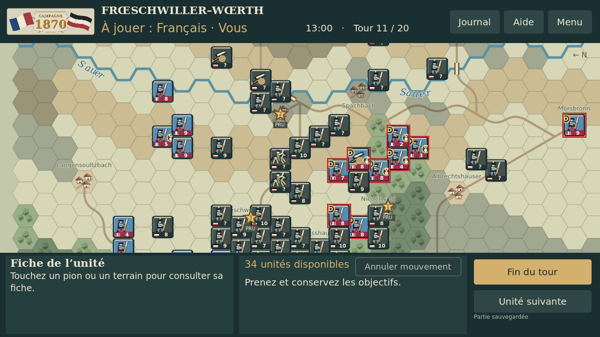
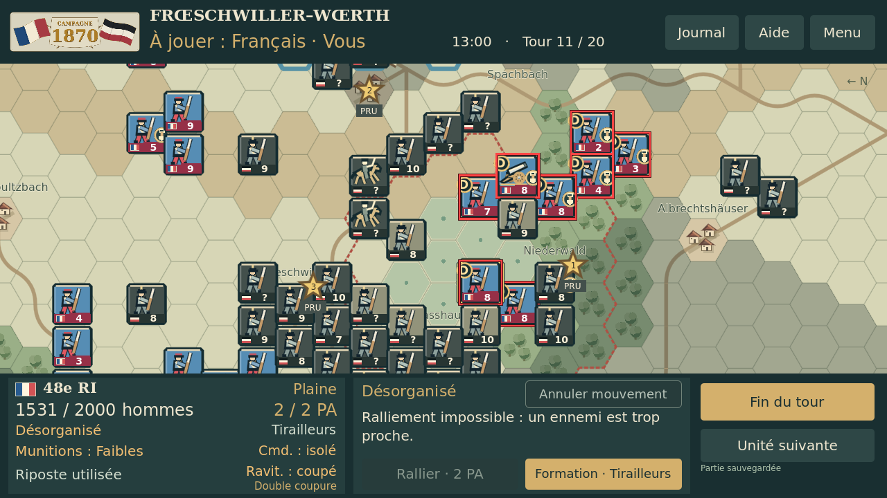
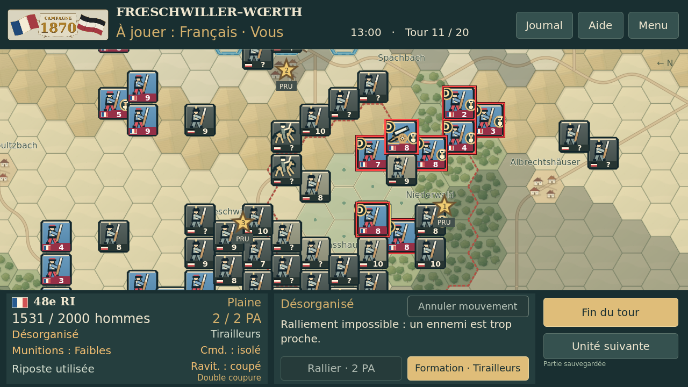
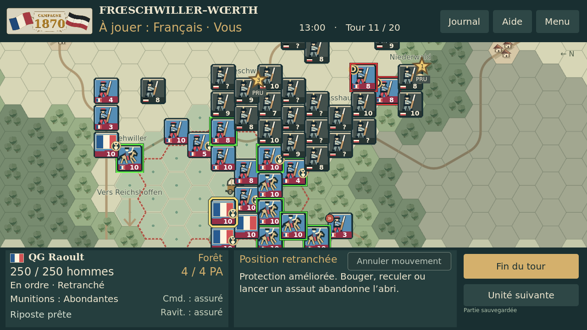
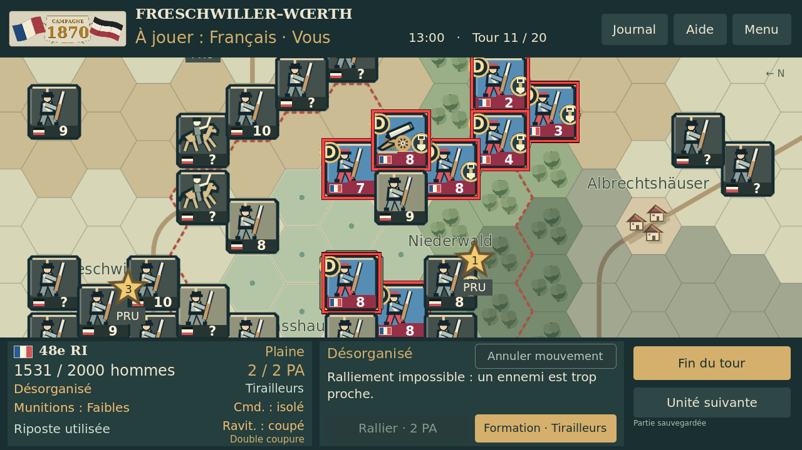

Vue générale — deux inscriptions Sauer, ponts et objectifs



Base stable V43.15, branche expérimentale indépendante. Captures réelles Godot 4.5.1 sous Linux, pas sur appareil Android. État T11 de test, mêmes positions et zooms. La fiche inférieure gauche reste identique pixel par pixel.







